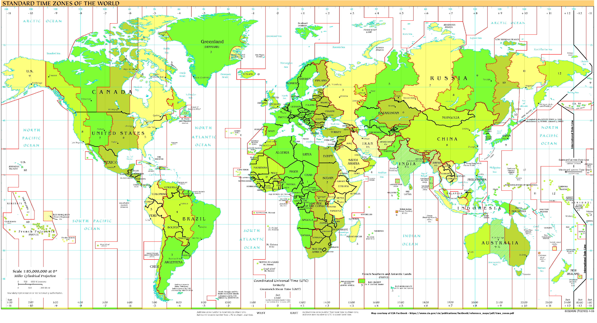

class: center, middle <br><br> # It's about time! Alex Samuel <br><br><small>https://github.com/alexhsamuel/pytime</small> ??? Hi! I'm going to talk about times and dates in Python. This talk is on GitHub, with an accompanying writeup that contains additional details. The writeup is still a work in progress, and I welcome your feedback. --- # Goals - Present general concerns in handling time and date. - Survey the options in Python. - Discuss features, performance. ??? I signed up to do this talk because there are a bewildering array of options for working with times and dates in Python. I work with some of them on a regular bases, but there are others I have used only occasionally or not at all. In order to force myself to evaluate all the choices currently out there, I submitted to do this talk. I'm warning you now, this will be the least sexy talk you attend today. My goal is to bore you with gory details of dealing with times, dates, and time zones. I'll stick to civil time as is widely used in business, and won't go into leap seconds, relativistic effects, or astronomical time systems. Also this is not a tutorial! My intent is to help you to choose the best tools for your work. --- class: advice, middle I will also give you some advice. <div style="float: right;"> <br><span style="font-size: 60%;"><i>Fig 1. Grain of salt.</i></span> </div> Advice slides look like this. They contain my _opinions_. ??? To distinguish my recommendations from information, I've formatted advice slides like this. Take them with a grain of salt. --- # Who am I? - Writing Python since version 1.4. - Used to work in high energy physics; now finance. - Write lots of date and time code. <svg class="octicon octicon-mark-github" viewBox="0 0 16 16" version="1.1" width="16" height="16" aria-hidden="true"><path fill-rule="evenodd" d="M8 0C3.58 0 0 3.58 0 8c0 3.54 2.29 6.53 5.47 7.59.4.07.55-.17.55-.38 0-.19-.01-.82-.01-1.49-2.01.37-2.53-.49-2.69-.94-.09-.23-.48-.94-.82-1.13-.28-.15-.68-.52-.01-.53.63-.01 1.08.58 1.23.82.72 1.21 1.87.87 2.33.66.07-.52.28-.87.51-1.07-1.78-.2-3.64-.89-3.64-3.95 0-.87.31-1.59.82-2.15-.08-.2-.36-1.02.08-2.12 0 0 .67-.21 2.2.82.64-.18 1.32-.27 2-.27.68 0 1.36.09 2 .27 1.53-1.04 2.2-.82 2.2-.82.44 1.1.16 1.92.08 2.12.51.56.82 1.27.82 2.15 0 3.07-1.87 3.75-3.65 3.95.29.25.54.73.54 1.48 0 1.07-.01 1.93-.01 2.2 0 .21.15.46.55.38A8.013 8.013 0 0 0 16 8c0-4.42-3.58-8-8-8z"></path></svg> <a href="https://github.com/alexhsamuel" style="font-size: 90%;">alexhsamuel</a> ??? First, who am I, so that you can determine whether to heed my advice? In the past, I worked in physics, where I wrote lots of Python data handling code. Now I work in finance, at Tudor Investment Corporation, where I write lots of Python data handling code. A lot of it involves times and dates, as you may imagine. My GitHub is alexhsamuel. There you will find lots of languishing, uncompleted projects, that you've never heard of. --- class: middle # Preliminaries ??? Let's start by discussing some basic concepts. --- # Time - Like space except just one dimension. - Increases monotonically. ??? What's time? Without getting too philosophical, time is kind of like space, except that it has one coordinate instead of three. Its value grows monotonically. Basically it's pretty simple. In computer programs, we mainly want to record the exact instant of time at which a particular event happened, for example, - when a log line was recorded, - when a user performed an action, - when some external event was measured, - or when a transaction occurred. --- # Date - Time is divided into days. - A day is recurring span of (usually) 24 hours. - Date specifies a day. ??? Humans of course have to complicate something as simple as this. First, we divide time into recurring spans of 24 hours, coinciding approximately with the Earth's rotation. Using this, traditionally specify time by first specifying a date, and then giving the time of day relative to the beginning of that date (midnight). We using a bizarre set of units: years, 12 months a year, 27 to 31 days a month, 23 to 25 hours a day, 60 minutes an hour, and 60 seconds a minute. --- # Time zones  ??? To complicate things _event_ further, we don't event agree on when each day starts. Each government slices its territories into _time zones_. Within each time zone, we agree to set all clocks forward or backward compared to clocks in a hypothetical reference time zone, which we call UTC. Within a time zone, this offset from UTC may change during the year, due to daylight savings time. A government is free to change its mind about its time zones, and governments do so from time to time. --- # Time zone database <a href="https://www.iana.org/time-zones">Database</a> a.k.a. "Olson database". - Linux, macOS: `/usr/share/zoneinfo` - Windows: `tzres.dll` Geographic names like "America/New_York". ??? Fortunately, the selfless souls at IANA maintain a database of time zones and their historical, current, and projected offsets from UTC. This is often called the "Olson database". On most Linux systems and macOS, it's installed in a bunch of files under `/usr/share/zoneinfo`; you can poke around there. On Windows, its stuffed in a DLL. In the database, most time zones are identified by geographic continent and city names, like "America/New_York", which happens to be UTC-5 hours in the winter and UTC-4 hours when daylight savings time is in effect. Note that UTC-5 is not the same as "America/New_York" or even U.S. Eastern time. For example, the "America/Bogota" time zone is also UTC-5 and in fact since Colombia currently doesn't do daylight savings, it stays there year around. --- # Time formats <pre style="font-size: 85%;"> 2017-11-25 16:01:30 -05:00 2017/11/25 16:01:30 11/25/17 16:01:30 2017 November 25 16:01:39 Sat, 25 Nov 2017 16:01:39 -0500 sábado 25 noviembre 2017 16:01:03 </pre> <div class="right">... and many more</div> [ISO 8601](https://www.iso.org/iso-8601-date-and-time-format.html) / [RFC 3339](https://tools.ietf.org/html/rfc3339): <div class="center" style="background: gold; font-weight: 700; padding: 8px">2017-11-25T21:01:30+00:00</div> ??? There are countless variations on how to format times and dates as strings. Everyone has an opinion. For user interfaces, you may have to support a variety of region-, culture-, and language-specific formats. - with UTC offset - without UTC offset - dashes or slashes or other punctuation - year first, month first, day first - month names, abbreviated names - day of the week - and of course, other languages For computers, there is a standard family of formats called ISO 8601, and a more specific standard RFC 3339 for Internet protocols. This highlighted string is an example. Sometimes you'll see a "Z" suffix instead of +00:00 to indicate UTC. --- class: advice, middle Use the RFC 3339 time format in APIs and data files. ??? UIs for nontechnical users will need more human-centric formats. But don't introduce unnecessary variation for machine-readable formats. --- class: middle # Python representations ??? I've found four general categoies of ways to represent times and dates in Python. 1. representations using only built-in types: strings and integers 2. the standard library's datetime package, & friends 3. derivatives of the datetime library 4. representations for collections of times and dates in datasets --- # Primitive - string times and dates: - `"2017-11-25"` - `"2017-11-25T16:01:30+00:00"` - integer-encoded strings: - `20171125` <br> ```py date = 10000 * year + 100 * month + day # ☹ ``` ??? A simple way to store a time or date is as a string. You have a choice of formats, as we've seen. Another option, especially for dates, is to pack the year, month, date components into an integer. How many of you have written code like this at some point? The chief benefit of these is that they work with all languages, frameworks, and file formats. But, there are basically no time operations you can perform directly on these representations, except ordering them. For anything else, you're on your own. --- class: advice, middle Use RFC 3339 strings for simple formats: CSV, JSON, ... Don't use strings internally if you perform _any_ time operations. Don't use integer-encoded dates or times if you can help it. ??? My recommendations are... Python provides actual data structures to use instead. --- # Tick representations Choose a starting time ("epoch") and a unit, and count ticks. ```py # seconds since 1970-01-01T00:00:00+00:00 >>> time.time() 1511734953.8993392 ``` ??? Another representation that doesn't require specialized types you might call a _tick representation_. Choose a starting time, called the _epoch_, choose a unit of time, and count ticks forward. In UNIX, and Python, we traditionally use UTC midnight on Jan 1, 1970 as the epoch. This representation is closest to the physical reality of time. It's simple. Clear. When one second elapses, this number increases by 1. Python's simplest time API, `time.time()`, returns the time on system clock as seconds since the epoch. If it weren't for humans and their idiosyncrasies, we could stop here and this would be my last slide. Unfortunately, we are humans. --- # [datetime](https://docs.python.org/3/library/datetime.html) `datetime`, `date`, `time`, `tzinfo`, and more. A time (an instance of the `datetime` class) can be, - _naive_, without time zone - _localized_, with time zone ??? The standard library datetime package solves many of our problems. It provides a time type, also called `datetime`, which stores times internally as year, month, day, hour, minute, second, microsecond components. So, resolution is 1 µs. There are two flavors of datetimes: _naive_ datetimes have no time zones, while localized datetimes do. It also provides date and time of day types. These are implemented as C extension types, and rather efficient. --- class: advice, middle Time zones are complicated. Use UTC as much as possible: - Use UTC localized datetimes. - Convert to other time zones only in UIs. ??? Some people choose to use naive datetimes and just always store UTC. IMO, this becomes confusing if you ever have to use localized datetimes for the UI, so I prefer datetimes localized to UTC. --- class: middle ```py >>> t = datetime.utcnow() >>> t.year, t.month, t.day (2017, 11, 26) >>> t.date() datetime.date(2017, 11, 26) ``` Formatting and parsing per C library `strftime()`. ```py >>> t = datetime(2017, 11, 26, 17, 45, 37) >>> format(t, "%Y-%m-%dT%H:%M:%S") '2017-11-26T17:45:37' ``` ??? Back to the datetime class. You can access its components as attributes, or extract the date or time of day as separate objects. Parsing and formatting use patterns similar to the C library's strftime and strptime functions. They participate nicely with Python's string formatting. --- class: advice, middle Use a date object to represent a date, not a time object. ??? Dates are fundamentally different objects, with different operations they can participate in. You'll sometimes see dates represented as the time at midnight on that date. Python gives you a real date type. Use it. --- # Shortcomings of datatime - `tzinfo` interface but no concrete time zones - limited convenience functions and utilities - 1 µs resolution ??? datetime has a number of limitations. It provides a time zone API, but no concrete implementations. Its API isn't always the most convenient, and it lacks many conveniences and useful utilities that people commonly need. Its 1 µs resolution is inadequate for some domains. One approach address these is to use additional third-party libraries with datetime. --- # datetime + [pytz](http://pythonhosted.org/pytz/) - Includes a recent copy of the time zone database. - Implements `tzinfo`. ```py >>> tz = pytz.timezone("America/New_York") >>> tz.localize(datetime.now()) datetime.datetime(2017, 11, 26, 18, 1, 6, 620221, tzinfo=<DstTzInfo 'America/New_York' EST-1 day, 19:00:00 STD>) ``` ??? ... datetime.now() returns a naive datetime. The time zone object has a localize method that converts it to a localized datetime. With pytz, it's critical to use this localize method; you can't just stuff the time zone object into the datetime's tz field yourself. You will get the wrong results! --- # datetime + [dateutil](https://dateutil.readthedocs.io/en/stable/) - Implements `tzinfo` using the system time zone database. - Also includes a copy of the time zone database. ```py >>> tz = dateutil.tz.gettz("America/New_York") ``` - Convenient parsing. ```py >>> dateutil.parser.parse("2017 Nov 1 9:15:00 UTC") datetime.datetime(2017, 11, 1, 9, 15, tzinfo=tzutc()) ``` ??? dateutil is another package that provides time zone implementations. By default, it uses your system's time zone database, but it also carries its own copy for use if needed. dateutil provides a convenient parser, which can usually figure out the format of a time string without being told. It also includes some recurrence / calendar functionality, which I won't get into here, plus calculation of Easter, which is a historically interesting problem. --- # datetime + [Babel](http://babel.pocoo.org/en/latest/) An internationalization library with time and date support. ```py >>> babel.dates.format_datetime(t, locale="zh") '2017年11月26日 下午11:32:31' ``` It uses an alternate style of format patterns. ```py >>> babel.dates.format_date(d, ... "'The 'dd' of 'MMMM', 'yyyy") 'The 26 of November, 2017' ``` ??? Babel is an internationalization package that handles dates and times. Conveniently, you can pass in a locale for each formatting operation. Some people prefer the JODA-style yyyy, MM, dd format strings to the strftime-style %Y, %m, %d. --- # datetime + [udatetime](https://github.com/freach/udatetime) Accelerated versions of some functionality, particularly RFC 3339 formatting, but doesn't support time zones properly. Particularly fast for generating timestamp strings for logs, APIs. ```py >>> udatetime.utcnow_to_string() '2017-11-27T00:19:42.815547+00:00' ``` POSIX only; no Windows support. --- # [humanize](https://github.com/jmoiron/humanize) A small library to produce casual human-friendly representations. ```py >>> t = datetime.now(); time.sleep(10); \ ... humanize.naturaltime(t) '10 seconds ago' >>> humanize.naturaldate(date(2017, 1, 1)) 'Jan 01' ``` --- class: middle # datetime derivatives ??? On to derivatives of datetime. There have been several attempts to improve datetime by wrapping or extending it. --- # [Delorean](http://delorean.readthedocs.io/en/latest/) - Wraps `datetime.datetime`. - Integrates pytz, Babel, humanize. - A few convenience methods. ```py >>> t = Delorean.now("America/New_York") >>> t.truncate("month") >>> print(t.format_datetime()) Nov 1, 2017, 12:00:00 AM >>> print(t.humanize()) 25 days ago ``` ??? ... Notice that you can pass in time zones as strings, which is nice. But: It provides no date or time classes. And the API feels inconsistent. For example, it doesn't participate in Python's normal string formatting mechanism. --- # [Arrow](http://arrow.readthedocs.io/en/latest/) - Wraps `datetime.datetime` - Localized times only. <small>☺</small> - Integrates `dateutil.tz`. ```py >>> t = arrow.get("2017-11-26T20:00:00-05:00") >>> t.to("Asia/Tokyo") >>> t.format("ddd MMM DD, HH:mm:ssZZ") 'Sun Nov 26, 20:00:00-05:00' ``` ??? ... As with Delorean, you can pass time zone names. I find the formatting a bit cumbersome, but some prefer this. But: Arrow also provides no date or time classes. --- - Well-designed convenience methods. ```py >>> arrow.get(1511743679) # epoch seconds <Arrow [2017-11-27T00:47:59+00:00]> >>> t.replace(minute=30, second=0) <Arrow [2017-11-27T00:30:00+00:00]> >>> t.shift(months=6) <Arrow [2018-05-27T00:47:59+00:00]> ``` - Custom formatting and localization (50 languages). ```py >>> t.floor("month").humanize(locale="hi") 'एक माह पहले' # "one month ago" ``` ??? You can convert epoch seconds and other values easily into Arrow instances. There are convenient methods to change fields, shift forward or backward by each time unit, to find round up or down by a time unit and so forth. It has a completely custom formatting implementation, with localization to 50 languages and also "humanize" formats. --- # [Pendulum](https://pendulum.eustace.io/) An ambitious extension of datetime. - Extends `datetime`, `date`, `time`, `tzinfo`. - Rich, well-designed API. - Localized times only. <small>☺</small> - Time zone data from [`pytzdata`](https://github.com/sdispater/pytzdata), but reads database directly. ??? An ambitious extension of datetime. It's the only extension package that provides dates and times as well. With the others, you have to drop back into datetime to combine dates and times. Localized times only! Because it subclasses rather than wraps datetime types, its instances are drop-in replacements. The API is quite extensive. --- - Smart parsing. ```py >>> pendulum.parse("Nov 26, 2017 20:00:00", ... tz="America/New_York") <Pendulum [2017-11-26T20:00:00-05:00]> ``` - Lots of formatting options. ```py >>> t = pendulum.now("Asia/Istanbul") >>> t.date().format("%A %d %B %Y", locale="tr") 'Pazartesi 27 Kasım 2017' >>> t.date().to_date_string() '2017-11-27' ``` ??? Smart parsing. Lots of formatting options, with about 50 languages supported. --- class: middle - Lots of convenience methods. ```py >>> t.start_of("century") <Pendulum [2001-01-01T00:00:00+02:00]> >>> t.date().previous(pendulum.WEDNESDAY) <Date [2017-11-22]> >>> t.time().add(hours=4) <Time [08:27:21.750466]> ``` --- class: middle # Time and date in datasets ??? This is PyDATA! One time value is not enough. We want to store large datasets with times and dates in them. --- # [NumPy](https://docs.scipy.org/doc/numpy/reference/arrays.datetime.html) datetime64 — int64 ticks since epoch. - Very efficient storage. - Very limited selection of operations. - Naive times (datetime64[ns]) and dates (datetime64[D]). ``` >>> np.array(times, dtype="datetime64[ns]") array(['2017-11-26T20:48:38.911016000', '2017-11-26T20:48:39.807050000', '2017-11-26T20:48:42.518963000'], dtype='datetime64[ns]') ``` ??? If you use NumPy, you may be aware of the datetime64 dtype. This is a tick representation: internally, it stores an int64 containing the number of time units since the epoch. There are various time units available, including days, seconds, ms, µs, ns. There are even actually ps and fs as well, but the range of these is so small that they're virtually useless. This representation is commonly used in technical applications, particularly with ns. So it's a natural fit for NumPy and easy to convert. Storage is extremely efficient: in an array, each value takes up 8 bytes. BUT: other than type conversion and comparison, there are basically no operations available. NumPy can store your times and dates but can't do too much with them. NumPy's times are all effectively naive; it has no notion of time zones. --- # [Pandas](http://pandas.pydata.org/pandas-docs/stable/timeseries.html) Pandas is backed by NumPy arrays, but works hard to fill in all the missing features. ??? What about Pandas? It's backed by NumPy arrays and uses datetime64, but works hard to fill in missing features. --- class: middle Pandas uses datetime64[ns] for time indexes and series, but adds localization. ```py >>> idx = pd.DatetimeIndex( ... [datetime.now() for _ in range(3)] ... ).tz_localize("America/New_York") >>> idx DatetimeIndex(['2017-11-26 21:22:15.235690-05:00', '2017-11-26 21:22:15.235696-05:00', '2017-11-26 21:22:15.235697-05:00'], dtype='datetime64[ns, America/New_York]', freq=None) ``` ??? Pandas uses datetime64[ns] for time indexes and series, but adds localization. In this example, we use the tz_localize method to localize all the values in the datetime index. You can see that Pandas has stuffed the time zone into the dtype. --- Datetime indexes have time-specific methods. ```py >>> idx.tz_convert("Asia/Tokyo") DatetimeIndex(['2017-11-27 11:25:10.898552+09:00', '2017-11-27 11:25:10.898557+09:00', '2017-11-27 11:25:10.898558+09:00'], dtype='datetime64[ns, Asia/Tokyo]', freq=None) ``` For time-valued series, values are on the `dt` proxy attribute. ```py >>> series = series.dt.tz_convert("Europe/London") >>> series.dt.hour.values array([17, 17, 17]) ``` ??? Datetime indexes have time-specific attributes and methods, such as `tz_convert` and year, month, day, hour, minute, second fields. For series whose values are times, these attributes and methods are organized within a magic `dt` proxy attribute. --- class: middle Also, Pandas provides a `Timestamp` class for single time values. ```py >>> ser[0] Timestamp('2017-11-26 17:25:10.898552+0000', tz='Europe/London') ``` This is an enhanced subclass of `datetime`: - augments resolution to 1 ns - adds a few convenience methods ??? Also, Pandas provides a `Timestamp` class for single time values. If you extract a sigle value from a datetime index or series, Pandas wraps it for you in this class. The `Timestamp` class is a subclass of datetime, but augments its resolution to 1 ns and also adds the same convenience methods that the datetime index and series provide. Though not as many or well-designed methods as Pendulum. --- # Performance Standard datetime performs well for all operations. In comparison, - Operations that udatetime provides are same or faster. - Delorean, Arrow, and Pendulum are a lot slower, often 20× or more. - NumPy and Pandas scalar operations are comparable or a bit slower. - pytz is faster than dateutil for time zone operations. ??? A quick word on performance. I don't have time to present detailed performance results here, but here are some general results. ... Delorean is the slowest of the bunch. The benchmark results and explanation are in the GitHub repo. --- class: middle # Roundup ??? Now for the roundup. The GitHub repo also has a feature matrix which summarizes many of the facts above. --- class: advice, middle For ease of use, Pendulum is a good choice. ??? ... Pendulum has tons of features, a solid API, and clear documentation. In contrast to Delorean and Arrow: it provides additional types for dates, time of day, intervals, _etc._; and its types subclass the corresponding datetime types, so they are drop-in compatible. Arrow is a solid second choice, if you don't care about date handling—since it does not provide a date type. Delorean lags in features and performance. --- class: advice, middle For performance and compatibility, use datetime. ??? ... The implementation is highly optimized. The feature set is somewhat sparse; you'll almost certainly need additional packages to fill feature gaps: - Use pytz for time zones; but be careful of the API. - Use udatetime to accelerate some operations, most notably string parsing. - Use Babel and humanize if you need them for UIs. --- class: advice, middle For large datasets involving times and dates, use Pandas. ??? ... NumPy can store these values, but provides almost no operations. If you already use NumPy and don't need time operations, it may be adequate. Otherwise, go with Pandas. --- class: advice, middle Learn how to use datetime, even if it's not your primary representation. It's the _lingua franca_ for times and dates in Python. ??? Finally, ... --- class: middle # Q&A ??? Thank you! --- class: middle, center also [http://github.com/alexhsamuel/cron](http://github.com/alexhsamuel/cron) ---